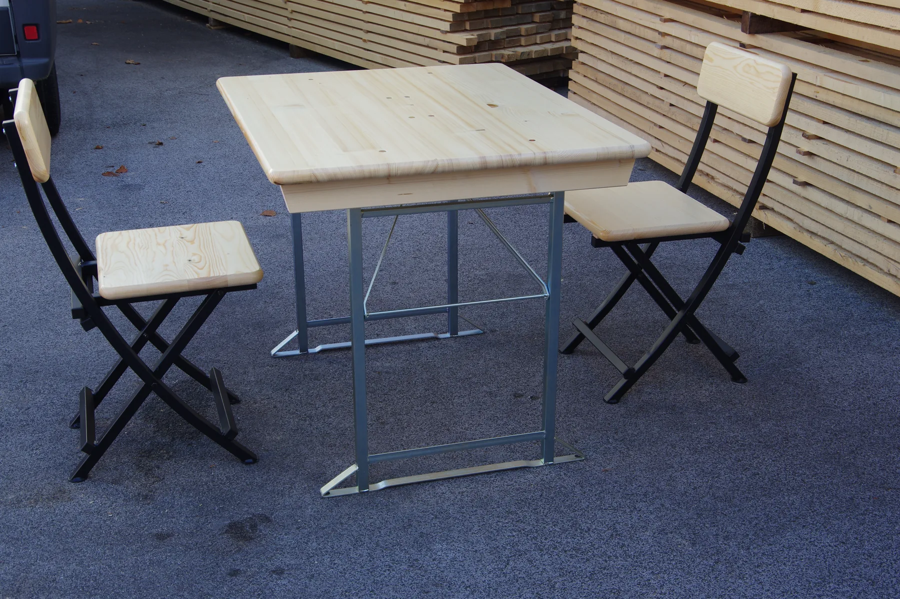
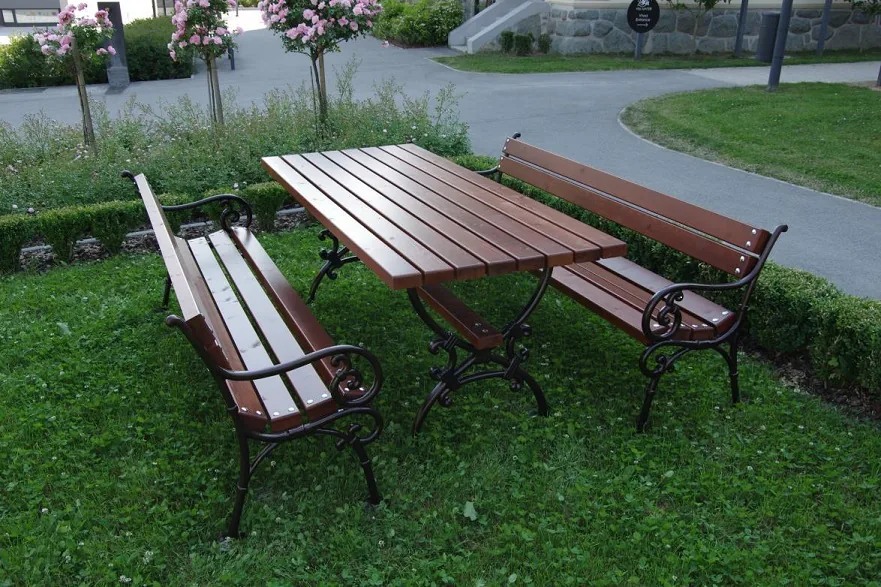
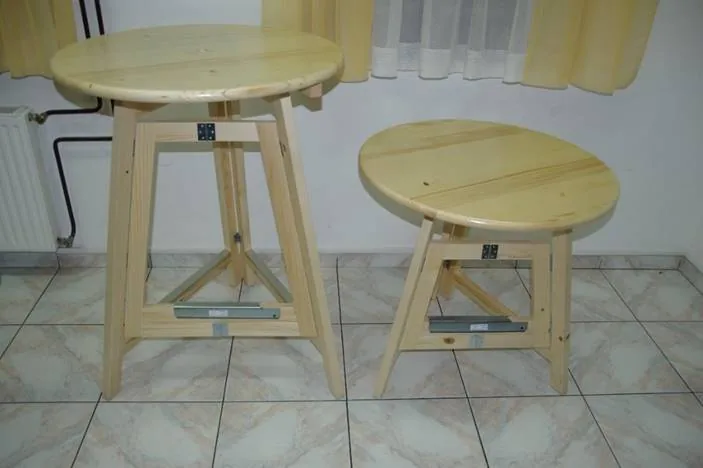
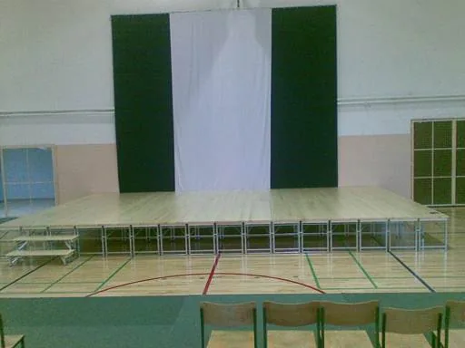
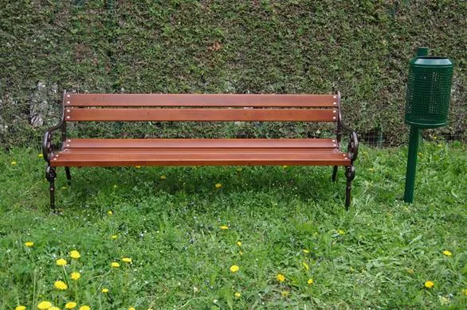
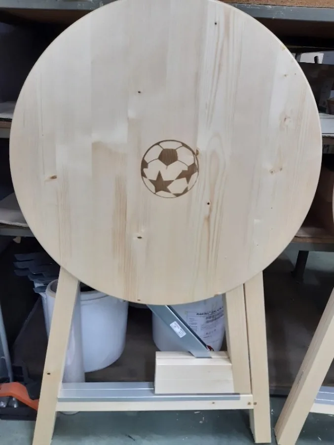
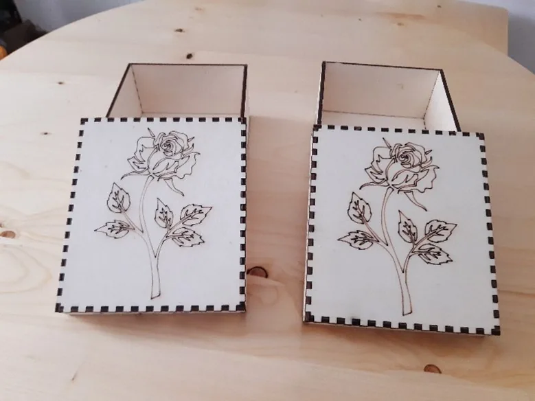

Teren in dvoraneZložljivi kovinski stoli in mize
Okovje iz pohištvenih cevi 25 x 25 mm, pocinkano ali barvano. Smrekov les debeline 29 mm, zaščiten s prozornim lakom. Stol je popolnoma zložljiv.

Kovinarstvo Uranjek d.o.o., Kajuhova cesta 17b, Šoštanj
Družinsko podjetje, ki kovino in les obdeluje pod isto streho. Največji del proizvodnje so zložljive gasilske garniture standardnih dimenzij; izdelamo jih tudi po meri.
Začetki družinskega podjetja, po navedbi podjetja. Najprej majhni kovinski predmeti za podjetja v bližnji okolici.
CNC stroji za obdelavo kovin in lesno obdelovalni CNC: od ogrodja do lakirane plošče v lastni delavnici.
Garniture izdelujemo tudi v dimenzijah po naročilu in željah kupca, z lasersko graviranim logotipom.

Zložljive vrtne garniture UR so namenjene za zunanjo in notranjo uporabo, gasilske veselice in podobna srečanja. Klopi z naslonom so primerne tudi za dvorane, kjer je prisotno večurno sedenje.
Pri shranilu zavzamejo minimalno prostora, ker se noge in naslon zložijo. Za shranilo ostane samo velikost lesa.
Vse, kar je na tej strani, je nastalo v delavnici v Šoštanju: ogrodje iz kovine, plošče in letve iz smrekovega lesa.

Okovje iz pohištvenih cevi 25 x 25 mm, pocinkano ali barvano. Smrekov les debeline 29 mm, zaščiten s prozornim lakom. Stol je popolnoma zložljiv.

Lito aluminijasto ogrodje, ki ne rjavi, prašno lakirano. Masivne smrekove letve 43 x 90 mm, impregnirane in dvakrat barvane z UV odporno barvo. Pritrditev na betonske podstavke.
Zložljiva lestev iz masivnega smrekovega lesa, dvižni mehanizem s plinsko vzmetjo. Za višine od 2 m do 3,6 m, največja obremenitev 160 kg. Izvedba tudi z belo pločevinasto oblogo pokrova.

Barska miza višine 110 cm, premer 80 cm; barski stol višine 80 cm s sediščem premera 35 cm. Izdelujemo tudi nižje mize, 78 cm, in posebno izvedbo iz žganega lesa.

Za dom, animacije in vrtce. Okovje iz cevi 25 x 25 mm, prašno lakirano; smrekov les 50 x 130 x 2,3, barvan z vodnimi barvami.

Iz naše mizarske delavnice: vezana plošča breza, dodatki iz smreke, 2,30 m² razstavno-prodajne površine. Pult 1514 x 757 x 20 mm, višina 900 mm. Pult je lahko nagnjen pod kotom 20 ali 35 stopinj.

Elementi 50 x 250 cm s tremi nogami, pocinkano okovje, smrekov les 29 mm, 2x lakiran. Višina 620 mm, velikost po naročilu, lahko tudi z zložljivimi stopnicami.

Vroče pocinkan voziček-paleta za 10 kompletov garnitur, palete se skladiščijo ena na drugi. Stenski nosilec za 2 garnituri, pritrjen s tremi vijaki.

Koši za zunanjo ureditev okolice, nosilci za zastave, obešala za kolesa, obešalniki, zračniki, eloksirani ročaji in aluminijasti prezračevalni trak.
V mizo ali stol lasersko graviramo logotip, napis ali sliko po vaši želji. Graviran napis je trajen, les nato dodatno zaščitimo z lakiranjem.




Logotipi na gasilskih mizah in klopeh, graviranje na barske mize in stole, napisi na klopeh za parke ter izdelava različnih škatlic in drugih izdelkov iz lesa ob posebnih priložnostih.
Začetki delovanja družinskega podjetja segajo v leto 1978, ko so začeli z izdelovanjem majhnih kovinskih predmetov za podjetja v bližnji okolici. Obseg dela se je nenehno povečeval in spreminjal.
Razpolagamo s CNC stroji za obdelavo kovin, škarjami za razrez pločevine, klasično stružnico, ekscentričnimi stiskalnicami in rezkalnim strojem. Na področju lesa je največja pridobitev lesno obdelovalni CNC, s katerim je obdelava lesa za gasilske garniture in podstrešne stopnice bistveno lažja.
Vir: uranjek.si, stran O podjetju. Letnici 1978 in 2007 sta navedbi podjetja; družba Kovinarstvo Uranjek d.o.o. je v register vpisana 27. 9. 2007 (bizi.si).
Začetek: majhni kovinski predmeti za podjetja v bližnji okolici.
Dejavnost razširjena s kovine na les. Vpis družbe v register, 27. 9. 2007.
Začetek lastne proizvodnje lesenih podstrešnih stopnic.
Zložljive gasilske garniture kot največji delež proizvodnje, otroške garniture, koši, stopnice in konstrukcije iz kovine in lesa.
Kajuhova cesta 17b, Šoštanj
Prikaži na zemljevidu (OpenStreetMap)